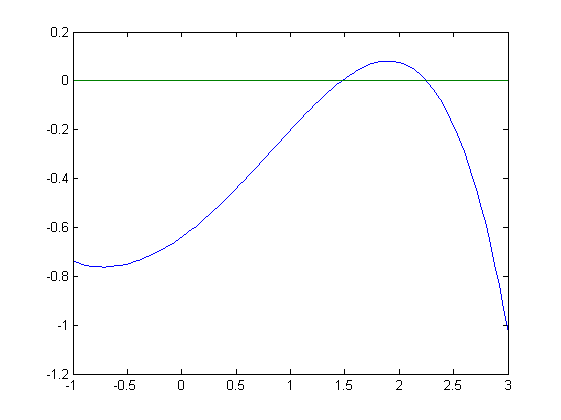

DEMOHESSIAN Short demonstration of Hessians
Contents
- Some sample applications of the Hessian toolbox
- Initialization of Hessians
- Access of the Hessian
- A simple example
- Zeros of a function
- Extrema of a function
- Inclusion of extrema
- Functions in several unknowns
- Approximation of an extremum
- Inclusion of a stationary point
- Inclusion of a minimum
- A model problem in 5000 unknowns I
- A model problem in 5000 unknowns II
- A model problem in 5000 unknowns III
- Verification of a minimum
- Enjoy INTLAB
Some sample applications of the Hessian toolbox
Hessians implement second order automatic differentiation in forward mode, which is conveniently to implement using the Matlab operator concept.
format compact long infsup setround(0) % set rounding to nearest
Initialization of Hessians
The initialization follows the same principles as for gradients, for example
x = hessianinit([ -.3 ; pi ])
Hessian value x.x =
-0.300000000000000
3.141592653589793
Hessian first derivative(s) x.dx =
1 0
0 1
Hessian second derivative(s) x.hx =
x.hx(1,1,:,:) =
0 0
0 0
x.hx(2,1,:,:) =
0 0
0 0
Access of the Hessian
Define the function f: R^n->R^n by
f = @(x)( 3*x(1)*x + sin(x).*(sec(x)-sqrt(x)) )
f =
@(x)(3*x(1)*x+sin(x).*(sec(x)-sqrt(x)))
The number of unknowns is determined by the length of the input vector x. For example,
f(1:4)
ans = 3.715936739847006 2.529019383490645 8.613026433001503 14.671426272965434
The function can be evaluated using the Hessian package as follows:
y = f(hessianinit([1.1 -2.7 pi]'));
There is direct access of the Hessian of y=f(x) by
y.hx
ans(:,:,1,1) =
25.793906481681791
0
0
ans(:,:,2,1) =
0
0
0
ans(:,:,3,1) =
0
0
0
ans(:,:,1,2) =
0
3
0
ans(:,:,2,2) =
3.000000000000000
1.156737479094825 - 1.276540468064363i
0
ans(:,:,3,2) =
0
0
0
ans(:,:,1,3) =
0
0
3
ans(:,:,2,3) =
0
0
0
ans(:,:,3,3) =
3.000000000000000
0
0.564189583547756
However, y.hx contains the Hessians of all three component functions of the original function f. To access the Hessians it is recommended to use the Hessian of individual components, not components of y.hx:
H3 = y(3).hx
H3 =
0 0 3.000000000000000
0 0 0
3.000000000000000 0 0.564189583547756
The matrix H3 is the Hessian of the third component function of f at x.
A simple example
Consider the following function
f = inline(' sin(x-log(x+2))-x*cosh(x)/15 ')
f =
Inline function:
f(x) = sin(x-log(x+2))-x*cosh(x)/15
To plot the function first vectorize f :
F = vectorize(f)
F =
Inline function:
F(x) = sin(x-log(x+2))-x.*cosh(x)./15
Plot the function including the x-axis:
x = linspace(-1,3); close; plot( x,F(x), x,0*x )
Zeros of a function
There are two roots near 1.5 and 2.5, and two extrema near -0.5 and 2. The roots can be included by verifynlss. For this simple function the inclusion is of maximum accuracy.
X1 = verifynlss(f,1.5) X2 = verifynlss(f,2.5)
Warning: ===> Caution: Input arguments out of range are ignored !!!
===> Use intvalinit('RealStdFctsExcptnOccurred') to check whether this happened
===> Using Brouwer's Fixed Point Theorem may yield erroneous results (see Readme.txt)
intval X1 =
[ 1.47132336560593, 1.47132336560596]
Warning: ===> Caution: Input arguments out of range are ignored !!!
===> Use intvalinit('RealStdFctsExcptnOccurred') to check whether this happened
===> Using Brouwer's Fixed Point Theorem may yield erroneous results (see Readme.txt)
intval X2 =
[ 2.25002867328682, 2.25002867328684]
Extrema of a function
The extrema can be approximated and included using Hessians. The following is one step of a simple Newton iteration starting at x=-0.5 :
x = -0.5; y = f(hessianinit(x)); x = x - y.hx\y.dx'; y
Hessian value y.x = -0.749124828278367 Hessian first derivative(s) y.dx = 0.113228338943107 Hessian second derivative(s) y.hx = 0.468843719809578
Inclusion of extrema
Inclusions of the extrema of f are computed by "verifynlss" with parameter 'h': This parameter specifies that f'(x) = 0 is solved instead of f(x) = 0.
X1 = verifynlss(f,-0.5,'h') X2 = verifynlss(f,2,'h')
Warning: ===> Caution: Input arguments out of range are ignored !!!
===> Use intvalinit('RealStdFctsExcptnOccurred') to check whether this happened
===> Using Brouwer's Fixed Point Theorem may yield erroneous results (see Readme.txt)
intval X1 =
[ -0.72343012456518, -0.72343012456517]
Warning: ===> Caution: Input arguments out of range are ignored !!!
===> Use intvalinit('RealStdFctsExcptnOccurred') to check whether this happened
===> Using Brouwer's Fixed Point Theorem may yield erroneous results (see Readme.txt)
intval X2 =
[ 1.89665314381530, 1.89665314381531]
Functions in several unknowns
Function with several unknowns are handled in a similar manner. Consider the following test function by N. Gould. It is taken from the Coconut collection of test function for global optimization, http://www.mat.univie.ac.at/~neum/glopt/coconut/benchmark/Library2.html .
f = inline(' x(3)-1 + sqr(x(1)) + sqr(x(2)) + sqr(x(3)+x(4)) + sqr(sin(x(3))) + sqr(x(1))*sqr(x(2)) + x(4)-3 + sqr(sin(x(3))) + sqr(x(4)-1) + sqr(sqr(x(2))) + sqr(sqr(x(3)) + sqr(x(4)+x(1))) + sqr(x(1)-4 + sqr(sin(x(4))) + sqr(x(2))*sqr(x(3))) + sqr(sqr(sin(x(4)))) ')
f =
Inline function:
f(x) = x(3)-1 + sqr(x(1)) + sqr(x(2)) + sqr(x(3)+x(4)) + sqr(sin(x(3))) + sqr(x(1))*sqr(x(2)) + x(4)-3 + sqr(sin(x(3))) + sqr(x(4)-1) + sqr(sqr(x(2))) + sqr(sqr(x(3)) + sqr(x(4)+x(1))) + sqr(x(1)-4 + sqr(sin(x(4))) + sqr(x(2))*sqr(x(3))) + sqr(sqr(sin(x(4))))
Approximation of an extremum
On the Web-site the global minimum of that function in 4 unknowns is given as 5.7444 . We use a couple of a Newton iterations starting at x=ones(4,1) to approximate a stationary point:
format short x = ones(4,1); for i=1:18 y = f(hessianinit(x)); x = x - y.hx\y.dx'; end y.dx
ans =
1.0e-003 *
0.2762 -0.0000 -0.0379 0.2504
Now x is an approximation of a stationary point: The gradient of f evaluated at x is not too far from zero.
Inclusion of a stationary point
Using this approximation an inclusion of a stationary point of f is computed by (in this case the last parameter 1 is used to see intermediate results):
format long X = verifynlss(f,x,'h',1)
residual norm(f'(xs_k)), floating point iteration 1
ans =
1.745962757807369e-008
residual norm(f'(xs_k)), floating point iteration 2
ans =
1.260970960048895e-015
residual norm(f'(xs_k)), floating point iteration 3
ans =
1.778307332460799e-015
interval iteration 1
interval iteration 2
Warning: ===> Caution: Input arguments out of range are ignored !!!
===> Use intvalinit('RealStdFctsExcptnOccurred') to check whether this happened
===> Using Brouwer's Fixed Point Theorem may yield erroneous results (see Readme.txt)
intval X =
[ 1.45986156438163, 1.45986156438164]
[ -0.00000000000001, 0.00000000000001]
[ 0.08089005653386, 0.08089005653387]
[ -0.81111308458518, -0.81111308458517]
Inclusion of a minimum
The interval vector X includes a root of f', i.e. a stationary point xx of f. To prove that f has a minumum at xx we need to prove positive definiteness of the Hessian of f evaluated at xx. The interval vector X includes the stationary point xx of f. So we compute an inclusion Y of the Hessian at X.
Mathematically, for every x in X the following is true: Y.x is an inclusion of f(x), Y.dx is an inclusion of f'(x), and Y.hx is an inclusion of the Hessian of f at x. Especially, the Hessian of f evaluated at xx is included in Y.hx.
Y = f(hessianinit(X));
format _
Y.hx
intval ans = 9.0766678854428_ 0.00000000000000 0.41981840965597 3.0793123311663_ 0.00000000000000 6.20966816386002 0.00000000000000 0.00000000000000 0.41981840965597 0.00000000000000 7.70978523486606 2.41981840965597 3.0793123311663_ 0.00000000000000 2.41981840965597 13.3722229587129_
This interval matrix contains obviously only diagonally dominant matrices, so the stationary point xx of f in X is indeed a (local) minimum.
A model problem in 5000 unknowns I
The next problem is taken from
http://www.sor.princeton.edu/~rvdb/ampl/nlmodels/cute/bdqrtic.mod
Source: Problem 61 in
A.R. Conn, N.I.M. Gould, M. Lescrenier and Ph.L. Toint,
"Performance of a multifrontal scheme for partially separable optimization",
Report 88/4, Dept of Mathematics, FUNDP (Namur, B), 1988.
Copyright (C) 2001 Princeton University
All Rights Reserved
see bottom of file test_h.mThe model problem is
N = length(x); % model problem: N = 1000, initial approximation x=ones(N,1);
I = 1:N-4;
y = sum( (-4*x(I)+3.0).^2 ) + sum( ( x(I).^2 + 2*x(I+1).^2 + ...
3*x(I+2).^2 + 4*x(I+3).^2 + 5*x(N).^2 ).^2 );This function is evaluated by
index = 2; y = test_h(x,index);
A model problem in 5000 unknowns II
The given starting vector is x = ones(5000,1). Recall that y = f(hessianinit(x)) has 5000 elements in y.x, 2.5e7 elements in y.dx and 1.25e11 elements in y.hx. In full storage this would mean 1 TeraByte of storage.
The problem can be solved in the above manner. On my 2.8 GHz Laptop this requires about 1 second per Newton iteration, and 5 seconds for one function evaluation with interval argument.
The following calculates an inclusion of a stationary point of f by first performing a simple Newton iteration followed by a verification step for the nonlinear system. The Hessian is treated as full matrix, so the computation may take a while.
n = 5000; index = 2; tic X = verifynlss('test_h',ones(n,1),'h',1,index); tfull = toc max(relerr(X))
residual norm(f'(xs_k)), floating point iteration 1
ans =
1.499415844035270e+006
residual norm(f'(xs_k)), floating point iteration 2
ans =
4.442651106586590e+005
residual norm(f'(xs_k)), floating point iteration 3
ans =
1.316745943265305e+005
residual norm(f'(xs_k)), floating point iteration 4
ans =
3.902878013156915e+004
residual norm(f'(xs_k)), floating point iteration 5
ans =
1.008486090604475e+004
residual norm(f'(xs_k)), floating point iteration 6
ans =
9.990290941444043e+002
residual norm(f'(xs_k)), floating point iteration 7
ans =
17.085974829564286
residual norm(f'(xs_k)), floating point iteration 8
ans =
0.070681934486502
residual norm(f'(xs_k)), floating point iteration 9
ans =
0.003385440115388
residual norm(f'(xs_k)), floating point iteration 10
ans =
2.846875081065138e-006
residual norm(f'(xs_k)), floating point iteration 11
ans =
2.592627758474784e-013
interval iteration 1
interval iteration 2
Warning: ===> Caution: Input arguments out of range are ignored !!!
===> Use intvalinit('RealStdFctsExcptnOccurred') to check whether this happened
===> Using Brouwer's Fixed Point Theorem may yield erroneous results (see Readme.txt)
tfull =
33.160402608773445
ans =
5.824392171660161e-016
A model problem in 5000 unknowns III
Note the small maximum relative error of the inclusion of the result. Verification is faster when solving the nonlinear system treating the Hessian as sparse. This is done by the following.
n = 5000; index = 2; tic X = verifynlss('test_h',ones(n,1),'hSparseSPD',1,index); tsparse = toc tfull max(relerr(X))
residual norm(f'(xs_k)), floating point iteration 1
ans =
1.499415844035270e+006
residual norm(f'(xs_k)), floating point iteration 2
ans =
4.442651106586590e+005
residual norm(f'(xs_k)), floating point iteration 3
ans =
1.316745943265305e+005
residual norm(f'(xs_k)), floating point iteration 4
ans =
3.902878013156915e+004
residual norm(f'(xs_k)), floating point iteration 5
ans =
1.008486090604475e+004
residual norm(f'(xs_k)), floating point iteration 6
ans =
9.990290941444043e+002
residual norm(f'(xs_k)), floating point iteration 7
ans =
17.085974829564286
residual norm(f'(xs_k)), floating point iteration 8
ans =
0.070681934486502
residual norm(f'(xs_k)), floating point iteration 9
ans =
0.003385440115388
residual norm(f'(xs_k)), floating point iteration 10
ans =
2.846875081065138e-006
residual norm(f'(xs_k)), floating point iteration 11
ans =
2.592627758474784e-013
interval iteration 1
interval iteration 2
Warning: ===> Caution: Input arguments out of range are ignored !!!
===> Use intvalinit('RealStdFctsExcptnOccurred') to check whether this happened
===> Using Brouwer's Fixed Point Theorem may yield erroneous results (see Readme.txt)
tsparse =
20.475674742209833
tfull =
33.160402608773445
ans =
7.862700411897924e-014
Note that verification is faster at the price of a less narrow inclusion (for comparison the previous time tfull is displayed).
Verification of a minimum
Finally, the Hessian at X is computed which includes the Hessian at the stationary point xhat in X.
y = test_h(hessianinit(X),index); isspd(y.hx)
ans =
1
The interval Hessian is proved by "isspd" to be symmetric positive definite: Mathematically the result "isspd(M)=1" for a symmetric (Hermitian) interval matrix M proves that every symmetric (Hermitian) matrix A within M is positive definite. In our case especially the Hermitian of f at the stationary point xhat. Therefore, xhat is proved to be a local minimum of f.
Enjoy INTLAB
INTLAB was designed and written by S.M. Rump, head of the Institute for Reliable Computing, Hamburg University of Technology. Suggestions are always welcome to rump (at) tuhh.de